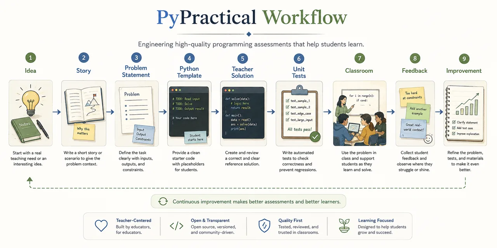

From idea to classroom-tested.
PyPractical treats assessment development as an engineering process. Every practical follows the same ten-step journey — designed, tested, used, and improved.

Ten steps, one journey
Each stage improves the assessment. Skipping stages leads to weaker assessments.
- Step 1
Identify the learning objective
One primary objective — what should students learn?
- Step 2
Design an authentic story
A believable scenario that motivates the problem.
- Step 3
Write the problem statement
Clarity that removes uncertainty without removing challenge.
- Step 4
Create the starter code
Scaffolding that encourages thinking, not blank-filling.
- Step 5
Write the teacher solution
A readable reference that verifies solvability.
- Step 6
Create unit tests
Basic, boundary, mixed, and hidden cases.
- Step 7
Verify every expected value
Independently verified — never on AI arithmetic alone.
- Step 8
Classroom testing
The classroom is the ultimate review environment.
- Step 9
Improve the assessment
No assessment is perfect. Improvement is expected.
- Step 10
Publish
Only when it's ready for classroom use.
Workflow specification
Rendered live from the repository.
Build one yourself
Follow the workflow to contribute an assessment your colleagues can trust.